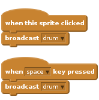
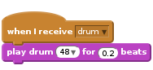
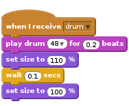

Activity Checklist
- Import a new sprite and choose Things -> Drum. Name the sprite “Drum”.
We want the drum to make a sound when we click it or press the
spacekey.
Now we need to make a sound when it receives
drum. You can change the number if you want to change the sound the drum makes.
Try changing the appearance to make it obvious which instrument was played.
